В уроке выражения мы узнали, что они бывают числовые и буквенные. Мы рассмотрели несколько числовых и буквенных выражений. Это были самые простейшие выражения.
Настало время сдвинуться с мёртвой точки и рассмотреть более сложные выражения. В данном уроке мы познакомимся с порядком выполнения действий.
Выражения могут состоять из нескольких чисел. Таковыми к примеру являются следующие выражения:
\[10 - 1 + 2 + 3 (3 + 5) + 2 \times 3 5 \times 2 + (5 - 3) : 2 + 1\]
Такие выражения нельзя вычислить сразу, то есть поставить знак равенства и записать ответ. Да и выглядят они сложнее, чем простые примеры вроде 2 + 2 или 9 − 3.
Для таких выражений существует правило порядка действий. Оно помогает понять, какое действие нужно выполнять первым, а какое — следующим.
При вычислении таких выражений, сначала нужно вспомнить главное правило:
Сначала выполняются действия в скобках!
Рассмотрим выражение 10 − 1 + 2 + 3. В нём нет действий в скобках, поэтому переходим к следующему правилу:
Читаем выражение слева направо. Если встречается умножение или деление, выполняем его!
Прочитаем наше выражение 10 − 1 + 2 + 3 слева направо. Видим, что в нём нет умножения либо деления. Тогда переходим к следующему правилу:
Читаем выражение слева направо. Если встречается сложение или вычитание, выполняем его!
Читаем наше выражение 10 − 1 + 2 + 3 слева направо. Встречаем вычитание 10 − 1. Выполняем это действие: 10 − 1 = 9. Полученную девятку запишем в главном выражении вместо 10 − 1
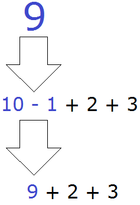
Затем снова обращаемся к правилам порядка действий. Применяем их в следующем порядке:
- Сначала выполняются действия в скобках!
- Читаем выражение слева направо. Если встречается умножение или деление, выполняем его!
- Читаем выражение слева направо. Если встречается сложение или вычитание, выполняем его!
Сейчас у нас получилось выражение 9 + 2 + 3. Читаем его слева направо и видим сложение 9 + 2. Выполняем это действие:
\[9 + 2 = 11\]
Теперь заменим выражение 9 + 2 числом 11. Получится:
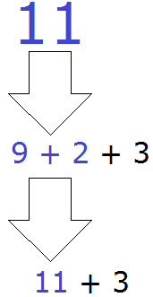
Осталось простейшее выражение 11 + 3, которое вычисляется легко:
\[11 + 3 = 14\]
Таким образом, значение выражения 10 − 1 + 2 + 3 равно 14
\[10 - 1 + 2 + 3 = 14\]
Иногда удобно расставить порядок действий над самим выражением. Для этого над операцией, которую необходимо выполнить, указывают её очередь.
К примеру, в выражении 10 − 1 + 2 + 3 все действия выполняются последовательно слева направо, поэтому для него можно определить следующий порядок:
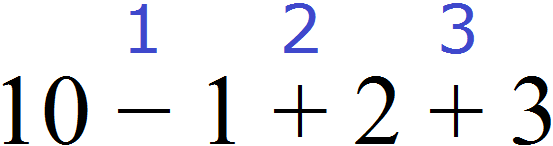
И далее можно выполнить действия по отдельности, что очень удобно:
\[1) 10 - 1 = 9\]
\[2) 9 + 2 = 11\]
\[3) 11 + 3 = 14\]
Также можно поставить знак равенства и сразу начать вычисления, соблюдая порядок действий.
Например, решение для выражения 10 − 1 + 2 + 3 можно записать следующим образом:
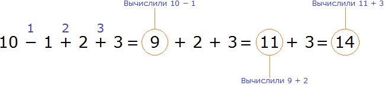
Но если человек не научился быстро считать в уме, то не рекомендуется использовать такой способ.
Пример 2. Найти значение выражения (3 + 5) + 2 × 3
Вспоминаем порядок действий:
- сначала скобки;
- затем умножение и деление;
- потом сложение и вычитание.
В выражении (3 + 5) + 2 × 3 есть действие в скобках (3 + 5). Сначала выполним его:
\[3 + 5 = 8\]
Запишем полученную восьмёрку в главном выражении вместо выражения в скобках:
\[8 + 2 \times 3\]
Снова читаем первое правило:
Сначала выполняются действия в скобках!
Видим, что в выражении 8 + 2 × 3 нет действий в скобках. Тогда читаем следующее правило:
Читаем выражение слева направо. Если встречается умножение или деление, выполняем его.
Смотрим на наше выражение 8 + 2 × 3. Видим умножение 2 × 3. Выполняем его:
\[2 \times 3 = 6\]
Теперь заменяем 2 × 3 на 6 в основном выражении.
\[8 + 6\]
Осталось простейшее выражение 8 + 6, которое вычисляется легко:
\[8 + 6 = 14\]
Значит, значение выражения (3 + 5) + 2 × 3 равно 14.
\[(3 + 5) + 2 \times 3 = 14\]
Также этот пример можно решить, расставив порядок действий прямо над выражением. Действие в скобках будет первым, умножение — вторым, а сложение — третьим:
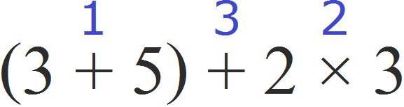
И далее можно выполнить действия по отдельности, что очень удобно:
\[1) 3 + 5 = 8\]
\[2) 2 \times 3 = 6\]
\[3) 8 + 6 = 14\]
Также можно поставить знак равенства и сразу начать вычислять выражение в порядке действий:
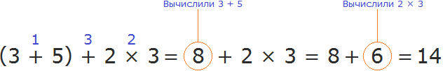
Но, опять же, используя такой способ, нужно быть очень внимательным.
Пример 3. Найти значение выражения 5 × 2 + (5 − 3) : 2 + 1
Расставим порядок действий над выражением. Действие в скобках будет первым действием, умножение — вторым действием, деление — третьим действием, четвёртое и пятое действие являются суммами и они будут выполнены в порядке их следования:
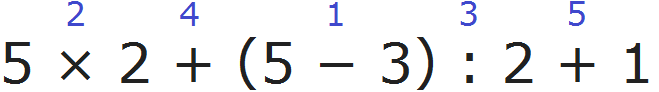
\[1) 5 - 3 = 2\]
\[2) 5 \times 2 = 10\]
\[3) 2 : 2 = 1\]
\[4) 10 + 1 = 11\]
\[5) 11 + 1 = 12\]
Также можно сразу начать вычислять выражение, выполняя действия в нужном порядке:
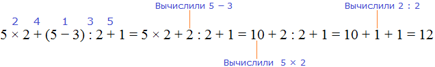
Четвёртым и пятым действием нужно было вычислить оставшееся выражение 10 + 1 + 1. Мы не стали выполнять эти действия по отдельности, а сразу записали ответ 12.
Пример 4. Найти значение выражения (3250 − 2905) : 5
Расставим порядок действий над выражением. Действие в скобках будет первым действием, а деление — вторым
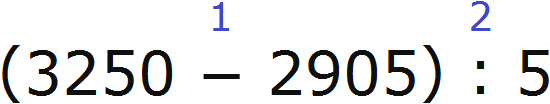
\[1) 3250 - 2905 = 345\]
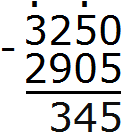
\[2) 345 : 5 = 69\]
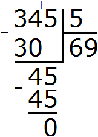
В скобках может быть не одно действие, а несколько. Иногда внутри одних скобок встречаются другие скобки. В таких случаях нужно применять те же правила порядка действий, которые мы уже изучили.
Пример 5. Найти значение выражения (6 411 × 8 − 40799) × 6
Расставим порядок действий над выражением. Сначала выполняются действия в скобках. При этом в скобках выполняется умножение и вычитание. Согласно порядку действий, умножение выполняется раньше вычитания.
В данном случае сначала нужно 6 411 умножить на 8, и из полученного результата вычесть 40 799. Полученный результат будет значением выражения, содержащегося в скобках. Этот результат будет умножен на 6.
В результате будем иметь следующий порядок:
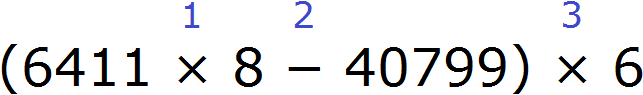
\[1) 6 411 \times 8 = 51 288\]
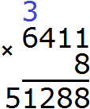
\[2) 51 288 - 40 799 = 10 489\]
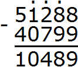
\[3) 10 489 \times 6 = 62 934\]
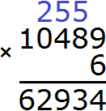
Пример 6. Найти значение выражения: 1 657 974 : 822 × 106 − (50 377 + 20 338)
Расставим порядок действий над выражением. Сначала выполняется действие в скобках. Деление будет вторым действием, умножение — третьим, вычитание — четвёртым.
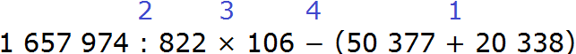
\[1) 50 377 + 20 338 = 70 715\]
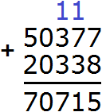
\[2) 1 657 974 : 822 = 2 017\]
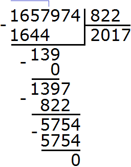
\[3) 2 017 \times 106 = 213 802\]
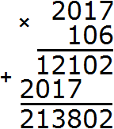
\[4) 213 802-70 715 = 143 087\]
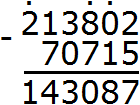
Пример 7. Найти значение выражения: 14 026 − (96 : 4 + 3680)
Расставим порядок действий над выражением. Действие в скобках будет первым. При этом в скобках выполняются деление и сложение. Согласно порядку действий, деление выполняется раньше сложения.
В данном случае сначала нужно разделить 96 на 4, а затем прибавить полученный результат к 3 680. Полученное число будет значением выражения в скобках. После этого его нужно вычесть из 14 026. Порядок действий будет следующим::
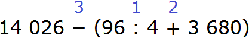
\[1) 96 : 4 = 24\]
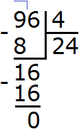
\[2) 24 + 3 680 = 3 704\]
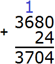
\[3) 14026 - 3 704 = 10 322\]
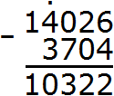
Попробуйте решить следующие примеры самостоятельно.
Задания для самостоятельного решения
Показать решение
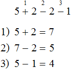
Показать решение
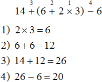
Показать решение
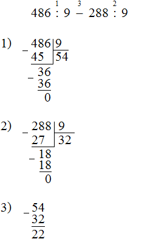
Показать решение
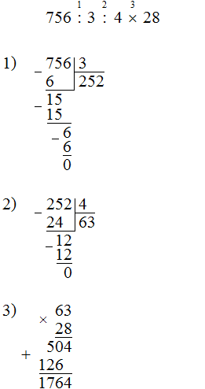
Показать решение
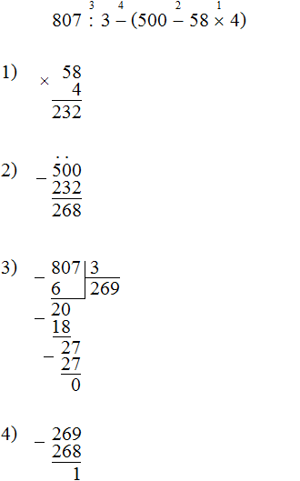